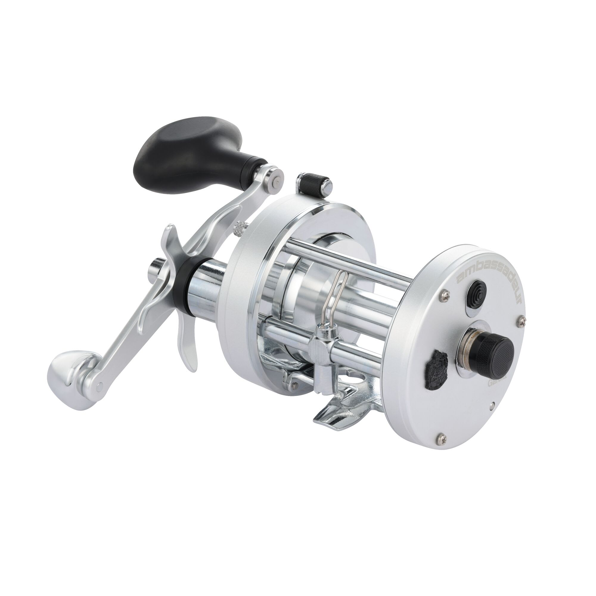

ReelCalc Reel Setup Guide
Abu Garcia Ambassadeur C1 7000 Line Capacity & Reel Setup Guide
The 7000 is the larger C1 here, with a 20 lb / 325-yard mono rating for anglers who need more line in reserve. Its 4.1:1 gearing is a different starting point from the faster 5500 and 6500. The 4-pin centrifugal brake provides casting control. The calculator is already set to this reel, so you can compare your line choices with or without backing.